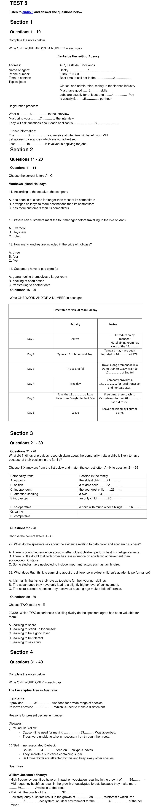

IELTS Listening: Test 5
Audio
This is the whole test, in one recording. In the exam you hear it once, so try a first listen without pausing.
Question book
Section 1
Questions 1–10
Complete the notes below.
Write ONE WORD AND/OR A NUMBER in each gap
Bankside Recruiting Agency
Address: 497, Eastside, Docklands
Name of agent: Becky 1
Phone number: 07866510333
Time to contact: Best time to call her in the 2
Typical jobs:
Clerical and admin roles, mainly in the finance industry
Must have good 3 skills
Jobs are usually for at least one 4 Pay is usually £ 5 per hour
Registration process:
Wear a 6 to the interview
Must bring your 7 to the interview
They will ask questions about each applicant’s 8
Further information:
The 9 you receive at interview will benefit you. Will get access to vacancies which are not advertised.
Less 10 is involved in applying for jobs.
Section 2
Questions 11–14
Choose the correct letters A - C
Matthews Island Holidays
11 According to the speaker, the company
- A has been in business for longer than most of its competitors
- B arranges holidays to more destinations than its competitors
- C has more customers than its competitors
12 Where can customers meet the tour manager before travelling to the Isle of Man?
- A Liverpool
- B Heysham
- C Luton
13 How many lunches are included in the price of holidays?
- A three
- B four
- C five
14 Customers have to pay extra for
- A guaranteeing themselves a larger room
- B booking at short notice
- C transferring to another date
Questions 15–20
Write ONE WORD AND/OR A NUMBER in each gap
Time table for Isle of Man Holiday
Activity Notes
Introduction by
Day 1 Arrive manager
Hotel dining room has view of the 15
Tynwald may have been
Day 2 Tynwald Exhibition and Peel founded in 16 not 979.
Travel along promenade in a
Day 3 Trip to Snaifell tram; train to Laxey; train to
17 of Snaifell
Company provides a
Day 4 Free day 18 for local transport and heritage sites.
Take the 19 railway Free time, then coach to
Day 5 train from Douglas to Port Erin Castletwon- former 20 has old castle.
Leave the island by Ferry or
Day 6 Leave plane.
Section 3
Questions 21–26
What did findings of previous research claim about the personality traits a child is likely to have because of their position in the family?
Choose SIX answers from the list below and match the correct letter, A - H to question 21 - 26
Personality traits Position in the family
A. outgoing the eldest child 21
B. selfish a middle child 22
C. independent the youngest child 23
D. attention-seeking a twin 24
E introverted an only child 25
F. co-operative a child with much older siblings 26
- G caring
- H competitive
Questions 27–28
Choose the correct letters A - C.
27 What do the speakers say about the evidence relating to birth order and academic success?
- A There is conflicting evidence about whether oldest children perform best in intelligence tests.
- B There is little doubt that birth order has less influence on academic achievement than socioeconomic status
- C Some studies have neglected to include important factors such as family size.
28 What does Ruth think is surprising about the difference in oldest children’s academic performance?
- A It is mainly thanks to their role as teachers for their younger siblings.
- B The advantages they have only lead to a slightly higher level of achievement.
- C The extra parental attention they receive at a young age makes little difference.
Questions 29–30
Choose TWO letters A - E
29 & 30 Which TWO experiences of sibling rivalry do the speakers agree has been valuable for them?
- A learning to share
- B learning to stand up for oneself
- C learning to be a good loser
- D learning to be tolerant
- E learning to say sorry
Section 4
Questions 31–40
Complete the notes below Write ONE WORD ONLY in each gap
The Eucalyptus Tree in Australia
Importance:
It provides 31 And food for a wide range of species
Its leaves provide 32 Which is used to make a disinfectant
Reasons for present decline in number:
Diseases (i) ‘Mundulla Yellow’
Cause - lime used for making 33 Was absorbed.
Trees were unable to take in necessary iron through their roots.
(ii) ‘Bell miner associated Dieback’
Cause 34 feed on Eucalyptus leaves
They secrete a substance containing sugar
Bell miner birds are attracted by this and keep away other species
Bushfires
William Jackson’s theory:
High frequency bushfires have an impact on vegetation resulting in the growth of 35 - Mid frequency bushfires result in the growth of eucalyptus forests because they make more
36 Available to the trees.
Maintain the quality of the 37
Low frequency bushfires result in the growth of 38 rainforest’s which is: a
39 ecosystem, an ideal environment for the 40 of the bell miner.
Show the original book pages (picture)

Tap or click the pages to open them full size in a new tab.
Answer sheet
Marking ignores capital letters and accepts plurals and the usual alternative answers. If your answer is right but not accepted, press My answer is also right under it.
Tapescript
Check your answers first, then the tapescript opens here.